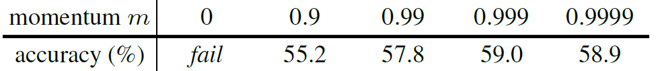
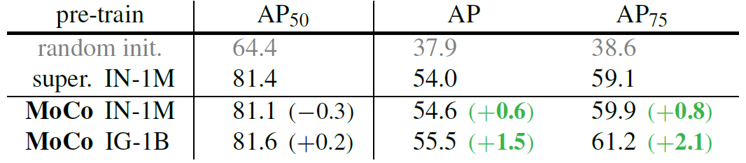

Momentum Contrast(MoCo) v1 & v2 리뷰
원문 : He, Kaiming, et al. “Momentum contrast for unsupervised visual representation learning.” Proceedings of the IEEE/CVF Conference on Computer Vision and Pattern Recognition. 2020. & Chen, Xinlei, et al. “Improved baselines with momentum contrastive learning.” arXiv preprint arXiv:2003.04297 (2020).
오늘은 FAIR에서 2020년에 CVPR에 발표한 Momentum contrast for unsupervised visual representation learning (MoCo) 논문과 그 후속 연구로 약간의 성능을 개선한 Improved baselines with momentum contrastive learning (MoCo v2) 논문에 대해 리뷰를 진행해보겠습니다.
MoCo는 SimCLR과 마찬가지로 contrastive loss를 이용한 unsupervised learning 방법입니다. 다만 negative pair를 추출하는 방식이나, query encoder를 update하는 방식에 약간의 차이가 있습니다. SimCLR에 대한 리뷰를 먼저 읽고 오시면 이해하기 좀 더 수월할 것 같습니다. 그럼 MoCo에 대한 소개를 시작하겠습니다!
Contrastive Learning as Dictionary Look-up
Contrastive learning이란 데이터의 label 없이 네트워크 모델을 학습하는 unsupervised learning의 일종으로, positive pair 간의 유사도는 높이고 negative pair 간의 유사도는 낮추는 방향으로 모델을 학습하는 방법입니다. Contrastive learning을 수행하려면 positive pair와 negative pair를 추출해야 하는데, SimCLR에서는 하나의 batch 안에서 positive pair과 negative pair를 추출하였습니다. 이와 달리 MoCo에서는 특정 크기의 dictionary를 정의하여 sample들의 key값을 저장해두고, query와 matching되는 값을 positive key로, 나머지를 negative key로 분류하여 추출하였습니다.
MoCo의 구조는 위의 그림과 같습니다. 각 이미지들에 대한 query와 key는 각각 query encoder와 key encoder를 이용하여 생성합니다. Encoder는 CNN 기반의 네트워크를 활용하며 MoCo에서는 ResNet을 활용하였습니다. 한 이미지에서 생성한 query는 같은 이미지로부터 생성한 key와 positive pair를 구성하고, 다른 이미지에서 생성한 key와 negative pair를 구성합니다.
Contrastive loss를 이용하여 안정적으로 학습하려면 충분한 개수의 negative pair이 꼭 필요합니다. MoCo에서는 충분히 큰 크기의 dictionary를 queue 형태로 두고, dictionary에서 negative sample들을 추출하였습니다. Dictionary의 크기는 일반적으로 batch size보다 크며 논문에서는 기본값으로 65536개를 이용하였습니다. 만약 256개의 batch 단위로 학습을 진행한다면, 하나의 입력 이미지에 대해 query와 key를 생성하여 positive pair를 이루고 dictionary에 이미 들어있는 65536개의 key와 negative pair를 이루게 됩니다. Dictionary는 queue 구조를 가지고 있기 때문에 256개의 batch에 대해 학습이 완료되고 나면, 학습 과정에서 생성된 256개의 key들이 가장 오래된 256개의 key들을 대체하게 됩니다. 학습에 따라 dictionary의 구성이 update되기 때문에, 이를 dynamic dictionary라고 부르기도 합니다.
하지만 queue 구조의 큰 dictionary를 이용하게 되면, key encoder를 학습하는 과정에서 수많은 negative sample들에 대해 gradient를 전파해야하기 때문에 학습이 어려워집니다. 이를 해결하기 위해 key encoder를 따로 학습하지 않고(stop gradiet), 학습된 query encoder를 그대로 가져와서 이용해보았습니다.

위의 표에서 momentum=0 인 경우가 매 batch마다 query encoder를 그대로 key encoder로 이용하여 학습한 결과입니다. Loss가 전혀 수렴하지 않아서 학습이 되지 않았는데, 논문에서는 빠르게 변화하는 query encoder를 그대로 이용해서 key를 계산하게 되면 key값들의 consistency가 유지되지 않기 때문이라고 설명합니다.
이를 해결하기 위해, momentum update를 적용시켜 key encoder를 천천히 진화시키는 방법을 이용했습니다. 위의 표에서 볼 수 있듯, 0.999의 momentum 값을 이용했을 때 가장 높은 정확도를 얻을 수 있었습니다. 이렇듯 dictionary 내의 key 구성이 consistent해야 학습이 안정적으로 진행되었습니다.
MoCo에서 강조하는 것은 크고 일관성 있는 dictionary의 구성입니다. MoCo는 queue 형태의 dictionary와 momentum update를 이용한 key encoder의 변화로 이를 가능하게 만들었습니다. 그렇다면 MoCo가 유사한 기존의 방법들과 어떻게 다른지에 대해 자세히 알아보겠습니다.
Comparison to previous mechanisms
논문에서는 MoCo를 기존의 두 가지 방법과 비교하고 있습니다. end to end 라고 부르는 첫 번째 방법은, key encoder도 query encoder와 마찬가지로 똑같이 학습시켜주는 방법입니다. 이 경우에는 queue 형태의 dictionary를 사용하는 것이 아니라, mini-batch에 해당하는 sample들을 batch로 이용했기 때문에 GPU memory 크기에 제약을 받을 수 밖에 없게 됩니다. 따라서 MoCo에 비해 상대적으로 적은 수의 negative sample밖에 이용할 수 없고, large-batch optimization에 대한 issue도 문제가 됩니다.
Memory bank 를 이용하는 두 번째 방법은, 데이터셋에 존재하는 모든 sample들의 representation을 memory bank에 넣어두고, 임의로 몇 개의 sample을 골라 dictionary를 구성하는 방법입니다. 이후 query에 해당하는 sample들로 memory bank를 update하면서 학습을 진행합니다. 이 경우에 memory bank 안의 key들이 빠르게 변하는 query encoder의 결과값으로 update 되기 때문에, dictionary가 inconsistent해지고 학습이 제대로 되지 않았습니다. 이를 해결하기 위해 key를 update할 때 momentum update를 적용하였는데, encoder가 아니라 key값 자체가 update되는 것이기 때문에 한 epoch 뒤의 encoder output에 대한 값을 이용하게 되고, 마찬가지로 inconsistency 문제가 발생하였습니다.
MoCo는 위 두 방법과 달리 queue 구조를 활용한 dictionary를 이용하기 때문에 충분한 양의 negative sample로 학습할 수 있습니다. 또한 memory-efficient하고 데이터셋의 크기가 클 때도 안정적으로 학습할 수 있습니다. (memory bank의 경우 데이터셋의 크기가 너무 크면, update 주기가 길어지기 때문에 학습이 불안정합니다.)
위의 그림은 세 방법에 대한 결과를 나타냅니다. End-to-end 방법은 MoCo와 비슷한 성능을 보이지만, 1024 이상으로 batch size를 키울 수 없었습니다. Memory bank 방법은 inconsistency issue로 인해 낮은 성능을 보여주었습니다.
Momentum Contrast
MoCo는 입력 이미지에 대해 random data augmentation을 거친 후 query 및 key encoder에 넣어주었습니다. Random data augmentation은 random resize/ random color jittering/ random horizontal flip/ random grayscale conversion의 순서로 구성했습니다.
Constrastive learning을 위한 loss function은 InfoNCE라고 불리는 위와 같은 형태의 함수를 이용했습니다. q 는 query를, k+ 는 positive key를, t 는 temperature htper-parameter를 의미합니다. k+ 를 제외한 나머지 k 는 negative sample입니다.
위 함수는 query와 positive key가 유사하고, 나머지 negative key와는 유사하지 않을때 값이 작아지는 cross-entropy 기반의 loss입니다. 유사도는 내적연산으로 계산합니다.
또한 multi-gpu device로 학습하는 과정에서, ResNet 구조 내부의 batch normalization 과정을 거칠 때 device별로 batch normalization을 해주었습니다. 이 때 데이터가 device 별로 편향되어서 batch normalization 과정에서 전체 data에 대한 정보를 잃는 현상이 있었습니다. 이를 해결하기 위해 MoCo에서는 device에 데이터를 분배할 때 random한 순서로 넣어주는 shuffling batch normalization 방법을 이용하였습니다.
MoCo는 ImageNet-1M 데이터셋과 Instagram-1B 데이터셋을 이용하여 학습하였습니다. 학습은 256개의 batch 단위로 진행되었고, 65536개의 sample을 넣을 수 있는 queue 구조의 dictionary를 이용하였습니다. Encoder 구조는 ResNet-50을 이용하였고 200 epochs만큼 학습해주었습니다.
Result
학습된 MoCo 모델은 일반적으로 unsupervised learning 알고리즘을 평가할 때 이용하는 linear evaluation 방법으로 성능을 측정하였습니다. Linear evaluation은 학습된 모델을 고정(freeze)하고 그 위에 linear classifier를 얹어서 학습 후 결과를 측정하는 방법입니다.
위의 그림은 linear evaluation 결과를 비교하고 있는데요. MoCo가 발표된 당시 기준으로 다른 unsupervised learning 방법과 비교해 SOTA의 성능을 보여주었습니다. (하지만 얼마 지나지 않아 더 좋은 성능을 보이는 모델-SimCLR이 발표되었습니다.)
논문에서는 또한 MoCo가 object detection이나 segmentation 등 다른 task의 backbone 모델로 이용되었을 때 어떤 결과를 보이는지에 대해서도 실험했습니다. Pascal VOC와 COCO 데이터셋을 이용하여 실험했는데, Pascal VOC 데이터셋에 대한 결과만 보여드리겠습니다.

MoCo는 scratch부터 학습하거나, supervised 방식으로 학습한 pretraining 모델을 이용한 경우보다 좋은 object detection 성능을 보여주었습니다.
MoCo는 end-to-end 나 memory bank와 비교했을 때도 AP 기준 더 높은 성능을 보였습니다. Classification task에 대해 더 유용한 visual representation이 object detection task에서도 더 뛰어난 결과를 보여주었습니다.
또한 RelPos, Jigsaw 등의 다른 unsupervised learning 알고리즘보다도 object detection task에서 뛰어난 성능을 보여주었습니다. Pre-training을 여러 데이터셋에 대해 진행했는데, 모두 같은 경향성을 보였습니다.
MoCo v2
저자들은 MoCo의 짧았던 전성기가 아쉬웠던지 곧이어 몇 가지 항목을 개선한 MoCo v2를 발표했습니다. MoCo v2는 SimCLR을 벤치마킹해서 기존의 MoCo를 세 가지 부분에서 개선했는데요. 우선 MLP 기반의 projection head를 추가하였고, encoder에 들어가는 sample들의 data augmentation 구성을 최적화했으며, cosine learning rate schedule을 추가하였습니다.
- MLP projection head
기존 MoCo와 SimCLR의 encoder network는 모두 ResNet을 기반으로 하고있지만, 약간의 구조적 차이가 존재합니다. MoCo는 ResNet의 마지막 global average-pooling layer와 연결된 linear layer(출력차원=128)까지를 기본 encoder로 이용했고, SimCLR은 global average-pooling layer까지를 base encoder로 이용하고 뒤에 MLP 구조의 projection head를 연결하였습니다.
SimCLR의 핵심적인 아이디어 중 하나가, 학습에만 projection head를 사용하고 학습이 완료된 후에는 projection head를 제외한 구조로 visual representation을 추출하는 것인데요. MoCo는 이러한 SimCLR의 구조를 그대로 차용하여 실험했습니다. 실험 결과 MLP projection head를 이용하기 전보다 5.6%의 linear evaluation 성능이 향상되었습니다.
- Data augmentation
SimCLR에서는 다양한 data augmentation의 조합에 따른 성능을 비교하여, augmentation의 구성을 결정했습니다. MoCo v2도 여러가지 실험을 통해, 기존의 augmentation에 Gaussian blurring을 추가하였습니다. 추가한 결과 기존에 비해 2.8%의 성능이 향상되었습니다.
- Cosine learning rate schedule
SimCLR에서는 cosine learning rate scheduling 방법을 이용해 학습을 진행했습니다. MoCo v2에서도 기존의 개선 방안들에 cosine decay learning rate를 추가하여 학습했습니다.
결과적으로 위 세가지 방법을 모두 이용하여 학습 시간을 충분히 늘려주었을 때, 71.1%로 SOTA의 성능을 보여주었습니다.또한 MoCo는 SimCLR과 비교해서 적은 batch size로도 학습이 가능하기 때문에 memory-efficiency 측면에서도 우세한 모습을 보여주었습니다.
Summary
MoCo는 크고 일관성 있는 negative sample dictionary를 구성해 학습 성능을 높이는데 초점을 맞춘 contrastive learning 기반의 모델입니다. 다양한 downstream task에 대한 unsupervised learning 기반 모델의 활용 가능성 또한 충분히 보여준 연구라고 생각합니다.
MoCo와 SimCLR은 축구계의 메시와 호날두처럼 서로 긍정적인 경쟁을 하고 있는 것으로 보입니다. 두 논문이 서로 발전적으로 진화하는 모습을 지켜보는 것도 상당히 즐거울 것 같습니다. 이만 이번 리뷰는 마무리하겠습니다. 긴 글 읽어주셔서 감사합니다 :)
참고 문헌 및 출처